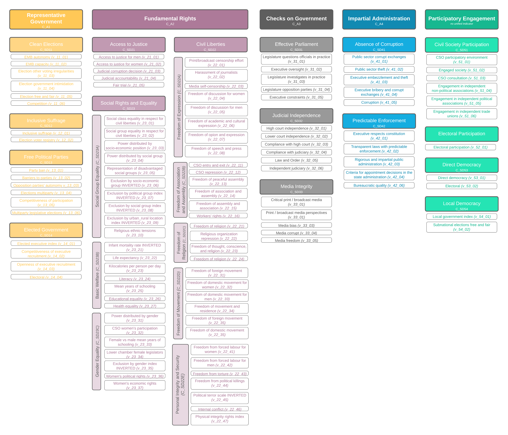

GSoDi Overview
The Global State of Democracy Index is a large dataset prepared by the International Institute for Democracy and Electoral Assistance (IDEA). For this project, I utilized the 2020 data, which has observations through the year 2019. The GSoDi includes 116 indicators which are then aggregated to measure 29 key aspects of democracy over 5 different primary domains of democracy. IDEA is not the primary surveyor of the data, but instead combines information from 11 different primary sources, allowing for a particularly robust view on democracy. Countries are only included if they have a population of at least one million (four smaller countries -- Barbados, Cape Verde, Iceland and Luxembourg, are an exception to this rule).
Cheat Sheet
To properly interperet the variables in the 2020 GSoDi, I encourage you to use the 2019 GSoDi Codeboook and the 2020 update. That being said, I created the following chart as a cheat sheet with basic information about the variables in the dataset, how they are encoded in the raw data, and what categories and aggregations are available. It is useful for quick reference and understanding the general structure of the dataset, but should not be understood apart from the official documentation. Feel free to zoom in on this image (right click + "Open image in new tab" is helpful) for best experience and/or to keep handy as you explore the data.
